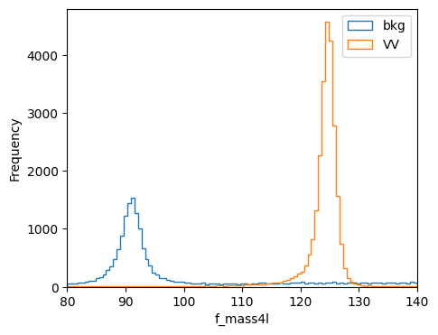
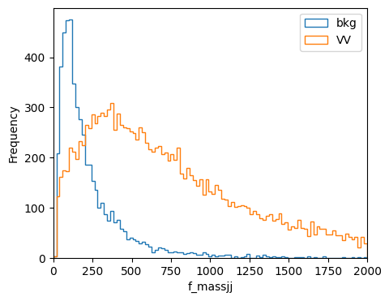

1. Loading Datasets#
Authors: Javier Duarte, Raghav Kansal
1.1. Load datasets from ROOT files using uproot#
Here we load the ROOT datasets in python using uproot (see: scikit-hep/uproot). For more information about how to use uproot, see the Uproot and Awkward Array for columnar analysis HATS@LPC 2023 tutorial.
import uproot
Download datasets from Zenodo:
%%bash
mkdir -p data
wget -O data/ntuple_4mu_bkg.root "https://zenodo.org/record/3901869/files/ntuple_4mu_bkg.root?download=1"
wget -O data/ntuple_4mu_VV.root "https://zenodo.org/record/3901869/files/ntuple_4mu_VV.root?download=1"
Show code cell output
--2023-08-10 20:18:37-- https://zenodo.org/record/3901869/files/ntuple_4mu_bkg.root?download=1
Resolving zenodo.org (zenodo.org)... 188.185.124.72
Connecting to zenodo.org (zenodo.org)|188.185.124.72|:443... connected.
HTTP request sent, awaiting response... 200 OK
Length: 8867265 (8.5M) [application/octet-stream]
Saving to: ‘data/ntuple_4mu_bkg.root’
0K .......... .......... .......... .......... .......... 0% 465K 18s
50K .......... .......... .......... .......... .......... 1% 353K 21s
100K .......... .......... .......... .......... .......... 1% 378K 22s
150K .......... .......... .......... .......... .......... 2% 210M 16s
200K .......... .......... .......... .......... .......... 2% 466K 16s
250K .......... .......... .......... .......... .......... 3% 463K 17s
300K .......... .......... .......... .......... .......... 4% 163K 21s
350K .......... .......... .......... .......... .......... 4% 461K 21s
400K .......... .......... .......... .......... .......... 5% 469K 20s
450K .......... .......... .......... .......... .......... 5% 22.0M 18s
500K .......... .......... .......... .......... .......... 6% 284K 19s
550K .......... .......... .......... .......... .......... 6% 58.7K 29s
600K .......... .......... .......... .......... .......... 7% 74.8M 26s
650K .......... .......... .......... .......... .......... 8% 252K 27s
700K .......... .......... .......... .......... .......... 8% 389K 26s
750K .......... .......... .......... .......... .......... 9% 460K 25s
800K .......... .......... .......... .......... .......... 9% 474K 25s
850K .......... .......... .......... .......... .......... 10% 158K 26s
900K .......... .......... .......... .......... .......... 10% 174M 24s
950K .......... .......... .......... .......... .......... 11% 403K 24s
1000K .......... .......... .......... .......... .......... 12% 472K 23s
1050K .......... .......... .......... .......... .......... 12% 324K 23s
1100K .......... .......... .......... .......... .......... 13% 375K 23s
1150K .......... .......... .......... .......... .......... 13% 463K 23s
1200K .......... .......... .......... .......... .......... 14% 470K 22s
1250K .......... .......... .......... .......... .......... 15% 58.5M 21s
1300K .......... .......... .......... .......... .......... 15% 162K 22s
1350K .......... .......... .......... .......... .......... 16% 466K 22s
1400K .......... .......... .......... .......... .......... 16% 473K 21s
1450K .......... .......... .......... .......... .......... 17% 283K 21s
1500K .......... .......... .......... .......... .......... 17% 219M 20s
1550K .......... .......... .......... .......... .......... 18% 325K 20s
1600K .......... .......... .......... .......... .......... 19% 457K 20s
1650K .......... .......... .......... .......... .......... 19% 472K 20s
1700K .......... .......... .......... .......... .......... 20% 173K 20s
1750K .......... .......... .......... .......... .......... 20% 477K 20s
1800K .......... .......... .......... .......... .......... 21% 474K 20s
1850K .......... .......... .......... .......... .......... 21% 15.8M 19s
1900K .......... .......... .......... .......... .......... 22% 277K 19s
1950K .......... .......... .......... .......... .......... 23% 378K 19s
2000K .......... .......... .......... .......... .......... 23% 463K 18s
2050K .......... .......... .......... .......... .......... 24% 463K 18s
2100K .......... .......... .......... .......... .......... 24% 158K 19s
2150K .......... .......... .......... .......... .......... 25% 130M 18s
2200K .......... .......... .......... .......... .......... 25% 376K 18s
2250K .......... .......... .......... .......... .......... 26% 520K 18s
2300K .......... .......... .......... .......... .......... 27% 320K 18s
2350K .......... .......... .......... .......... .......... 27% 378K 17s
2400K .......... .......... .......... .......... .......... 28% 465K 17s
2450K .......... .......... .......... .......... .......... 28% 12.7M 17s
2500K .......... .......... .......... .......... .......... 29% 468K 17s
2550K .......... .......... .......... .......... .......... 30% 164K 17s
2600K .......... .......... .......... .......... .......... 30% 467K 17s
2650K .......... .......... .......... .......... .......... 31% 472K 16s
2700K .......... .......... .......... .......... .......... 31% 13.2M 16s
2750K .......... .......... .......... .......... .......... 32% 160K 16s
2800K .......... .......... .......... .......... .......... 32% 415K 16s
2850K .......... .......... .......... .......... .......... 33% 12.9M 16s
2900K .......... .......... .......... .......... .......... 34% 477K 15s
2950K .......... .......... .......... .......... .......... 34% 172K 16s
3000K .......... .......... .......... .......... .......... 35% 470K 15s
3050K .......... .......... .......... .......... .......... 35% 472K 15s
3100K .......... .......... .......... .......... .......... 36% 12.8M 15s
3150K .......... .......... .......... .......... .......... 36% 283K 15s
3200K .......... .......... .......... .......... .......... 37% 385K 15s
3250K .......... .......... .......... .......... .......... 38% 467K 14s
3300K .......... .......... .......... .......... .......... 38% 484K 14s
3350K .......... .......... .......... .......... .......... 39% 7.22M 14s
3400K .......... .......... .......... .......... .......... 39% 158K 14s
3450K .......... .......... .......... .......... .......... 40% 404K 14s
3500K .......... .......... .......... .......... .......... 40% 470K 14s
3550K .......... .......... .......... .......... .......... 41% 327K 14s
3600K .......... .......... .......... .......... .......... 42% 382K 13s
3650K .......... .......... .......... .......... .......... 42% 181M 13s
3700K .......... .......... .......... .......... .......... 43% 462K 13s
3750K .......... .......... .......... .......... .......... 43% 478K 13s
3800K .......... .......... .......... .......... .......... 44% 98.5K 13s
3850K .......... .......... .......... .......... .......... 45% 95.5K 13s
3900K .......... .......... .......... .......... .......... 45% 117M 13s
3950K .......... .......... .......... .......... .......... 46% 152K 13s
4000K .......... .......... .......... .......... .......... 46% 459K 13s
4050K .......... .......... .......... .......... .......... 47% 474K 13s
4100K .......... .......... .......... .......... .......... 47% 9.51M 13s
4150K .......... .......... .......... .......... .......... 48% 288K 13s
4200K .......... .......... .......... .......... .......... 49% 382K 12s
4250K .......... .......... .......... .......... .......... 49% 463K 12s
4300K .......... .......... .......... .......... .......... 50% 475K 12s
4350K .......... .......... .......... .......... .......... 50% 146K 12s
4400K .......... .......... .......... .......... .......... 51% 229M 12s
4450K .......... .......... .......... .......... .......... 51% 467K 12s
4500K .......... .......... .......... .......... .......... 52% 472K 11s
4550K .......... .......... .......... .......... .......... 53% 335K 11s
4600K .......... .......... .......... .......... .......... 53% 385K 11s
4650K .......... .......... .......... .......... .......... 54% 474K 11s
4700K .......... .......... .......... .......... .......... 54% 480K 11s
4750K .......... .......... .......... .......... .......... 55% 158K 11s
4800K .......... .......... .......... .......... .......... 56% 59.5M 11s
4850K .......... .......... .......... .......... .......... 56% 463K 10s
4900K .......... .......... .......... .......... .......... 57% 463K 10s
4950K .......... .......... .......... .......... .......... 57% 287K 10s
5000K .......... .......... .......... .......... .......... 58% 63.7M 10s
5050K .......... .......... .......... .......... .......... 58% 366K 10s
5100K .......... .......... .......... .......... .......... 59% 403K 10s
5150K .......... .......... .......... .......... .......... 60% 465K 9s
5200K .......... .......... .......... .......... .......... 60% 170K 9s
5250K .......... .......... .......... .......... .......... 61% 474K 9s
5300K .......... .......... .......... .......... .......... 61% 466K 9s
5350K .......... .......... .......... .......... .......... 62% 286K 9s
5400K .......... .......... .......... .......... .......... 62% 91.3M 9s
5450K .......... .......... .......... .......... .......... 63% 383K 9s
5500K .......... .......... .......... .......... .......... 64% 466K 8s
5550K .......... .......... .......... .......... .......... 64% 472K 8s
5600K .......... .......... .......... .......... .......... 65% 157K 8s
5650K .......... .......... .......... .......... .......... 65% 417K 8s
5700K .......... .......... .......... .......... .......... 66% 11.7M 8s
5750K .......... .......... .......... .......... .......... 66% 472K 8s
5800K .......... .......... .......... .......... .......... 67% 323K 8s
5850K .......... .......... .......... .......... .......... 68% 384K 8s
5900K .......... .......... .......... .......... .......... 68% 51.0M 7s
5950K .......... .......... .......... .......... .......... 69% 233K 7s
6000K .......... .......... .......... .......... .......... 69% 11.4M 7s
6050K .......... .......... .......... .......... .......... 70% 160K 7s
6100K .......... .......... .......... .......... .......... 71% 462K 7s
6150K .......... .......... .......... .......... .......... 71% 474K 7s
6200K .......... .......... .......... .......... .......... 72% 294K 7s
6250K .......... .......... .......... .......... .......... 72% 357K 6s
6300K .......... .......... .......... .......... .......... 73% 196M 6s
6350K .......... .......... .......... .......... .......... 73% 393K 6s
6400K .......... .......... .......... .......... .......... 74% 469K 6s
6450K .......... .......... .......... .......... .......... 75% 176K 6s
6500K .......... .......... .......... .......... .......... 75% 468K 6s
6550K .......... .......... .......... .......... .......... 76% 15.2M 6s
6600K .......... .......... .......... .......... .......... 76% 468K 5s
6650K .......... .......... .......... .......... .......... 77% 281K 5s
6700K .......... .......... .......... .......... .......... 77% 379K 5s
6750K .......... .......... .......... .......... .......... 78% 475K 5s
6800K .......... .......... .......... .......... .......... 79% 468K 5s
6850K .......... .......... .......... .......... .......... 79% 27.3M 5s
6900K .......... .......... .......... .......... .......... 80% 157K 5s
6950K .......... .......... .......... .......... .......... 80% 409K 4s
7000K .......... .......... .......... .......... .......... 81% 489K 4s
7050K .......... .......... .......... .......... .......... 81% 309K 4s
7100K .......... .......... .......... .......... .......... 82% 43.5M 4s
7150K .......... .......... .......... .......... .......... 83% 154K 4s
7200K .......... .......... .......... .......... .......... 83% 28.1M 4s
7250K .......... .......... .......... .......... .......... 84% 95.8K 4s
7300K .......... .......... .......... .......... .......... 84% 130K 4s
7350K .......... .......... .......... .......... .......... 85% 468K 3s
7400K .......... .......... .......... .......... .......... 86% 471K 3s
7450K .......... .......... .......... .......... .......... 86% 195K 3s
7500K .......... .......... .......... .......... .......... 87% 209M 3s
7550K .......... .......... .......... .......... .......... 87% 455K 3s
7600K .......... .......... .......... .......... .......... 88% 463K 3s
7650K .......... .......... .......... .......... .......... 88% 282K 3s
7700K .......... .......... .......... .......... .......... 89% 389K 3s
7750K .......... .......... .......... .......... .......... 90% 55.1M 2s
7800K .......... .......... .......... .......... .......... 90% 460K 2s
7850K .......... .......... .......... .......... .......... 91% 457K 2s
7900K .......... .......... .......... .......... .......... 91% 159K 2s
7950K .......... .......... .......... .......... .......... 92% 424K 2s
8000K .......... .......... .......... .......... .......... 92% 8.90M 2s
8050K .......... .......... .......... .......... .......... 93% 469K 2s
8100K .......... .......... .......... .......... .......... 94% 321K 1s
8150K .......... .......... .......... .......... .......... 94% 374K 1s
8200K .......... .......... .......... .......... .......... 95% 464K 1s
8250K .......... .......... .......... .......... .......... 95% 9.14M 1s
8300K .......... .......... .......... .......... .......... 96% 472K 1s
8350K .......... .......... .......... .......... .......... 97% 164K 1s
8400K .......... .......... .......... .......... .......... 97% 465K 1s
8450K .......... .......... .......... .......... .......... 98% 11.9M 0s
8500K .......... .......... .......... .......... .......... 98% 481K 0s
8550K .......... .......... .......... .......... .......... 99% 290K 0s
8600K .......... .......... .......... .......... .......... 99% 384K 0s
8650K ......... 100% 159M=23s
2023-08-10 20:19:02 (369 KB/s) - ‘data/ntuple_4mu_bkg.root’ saved [8867265/8867265]
--2023-08-10 20:19:02-- https://zenodo.org/record/3901869/files/ntuple_4mu_VV.root?download=1
Resolving zenodo.org (zenodo.org)... 188.185.124.72
Connecting to zenodo.org (zenodo.org)|188.185.124.72|:443... connected.
HTTP request sent, awaiting response... 200 OK
Length: 4505518 (4.3M) [application/octet-stream]
Saving to: ‘data/ntuple_4mu_VV.root’
0K .......... .......... .......... .......... .......... 1% 463K 9s
50K .......... .......... .......... .......... .......... 2% 181K 17s
100K .......... .......... .......... .......... .......... 3% 380K 15s
150K .......... .......... .......... .......... .......... 4% 460K 13s
200K .......... .......... .......... .......... .......... 5% 176K 15s
250K .......... .......... .......... .......... .......... 6% 307M 12s
300K .......... .......... .......... .......... .......... 7% 464K 12s
350K .......... .......... .......... .......... .......... 9% 479K 11s
400K .......... .......... .......... .......... .......... 10% 160K 13s
450K .......... .......... .......... .......... .......... 11% 58.3M 11s
500K .......... .......... .......... .......... .......... 12% 237K 12s
550K .......... .......... .......... .......... .......... 13% 278K 12s
600K .......... .......... .......... .......... .......... 14% 295K 12s
650K .......... .......... .......... .......... .......... 15% 90.6M 11s
700K .......... .......... .......... .......... .......... 17% 455K 10s
750K .......... .......... .......... .......... .......... 18% 468K 10s
800K .......... .......... .......... .......... .......... 19% 184K 10s
850K .......... .......... .......... .......... .......... 20% 464K 10s
900K .......... .......... .......... .......... .......... 21% 469K 10s
950K .......... .......... .......... .......... .......... 22% 10.0M 9s
1000K .......... .......... .......... .......... .......... 23% 286K 9s
1050K .......... .......... .......... .......... .......... 25% 391K 9s
1100K .......... .......... .......... .......... .......... 26% 452K 9s
1150K .......... .......... .......... .......... .......... 27% 452K 9s
1200K .......... .......... .......... .......... .......... 28% 165K 9s
1250K .......... .......... .......... .......... .......... 29% 1.78M 8s
1300K .......... .......... .......... .......... .......... 30% 478K 8s
1350K .......... .......... .......... .......... .......... 31% 458K 8s
1400K .......... .......... .......... .......... .......... 32% 104K 9s
1450K .......... .......... .......... .......... .......... 34% 108K 9s
1500K .......... .......... .......... .......... .......... 35% 465K 9s
1550K .......... .......... .......... .......... .......... 36% 326K 9s
1600K .......... .......... .......... .......... .......... 37% 74.0M 8s
1650K .......... .......... .......... .......... .......... 38% 324K 8s
1700K .......... .......... .......... .......... .......... 39% 465K 8s
1750K .......... .......... .......... .......... .......... 40% 458K 8s
1800K .......... .......... .......... .......... .......... 42% 175K 8s
1850K .......... .......... .......... .......... .......... 43% 467K 8s
1900K .......... .......... .......... .......... .......... 44% 13.8M 7s
1950K .......... .......... .......... .......... .......... 45% 463K 7s
2000K .......... .......... .......... .......... .......... 46% 288K 7s
2050K .......... .......... .......... .......... .......... 47% 388K 7s
2100K .......... .......... .......... .......... .......... 48% 468K 7s
2150K .......... .......... .......... .......... .......... 50% 19.8M 6s
2200K .......... .......... .......... .......... .......... 51% 462K 6s
2250K .......... .......... .......... .......... .......... 52% 151K 6s
2300K .......... .......... .......... .......... .......... 53% 468K 6s
2350K .......... .......... .......... .......... .......... 54% 463K 6s
2400K .......... .......... .......... .......... .......... 55% 323K 6s
2450K .......... .......... .......... .......... .......... 56% 85.2M 5s
2500K .......... .......... .......... .......... .......... 57% 381K 5s
2550K .......... .......... .......... .......... .......... 59% 465K 5s
2600K .......... .......... .......... .......... .......... 60% 470K 5s
2650K .......... .......... .......... .......... .......... 61% 162K 5s
2700K .......... .......... .......... .......... .......... 62% 43.6M 5s
2750K .......... .......... .......... .......... .......... 63% 453K 4s
2800K .......... .......... .......... .......... .......... 64% 475K 4s
2850K .......... .......... .......... .......... .......... 65% 285K 4s
2900K .......... .......... .......... .......... .......... 67% 387K 4s
2950K .......... .......... .......... .......... .......... 68% 373K 4s
3000K .......... .......... .......... .......... .......... 69% 9.85M 4s
3050K .......... .......... .......... .......... .......... 70% 480K 4s
3100K .......... .......... .......... .......... .......... 71% 176K 3s
3150K .......... .......... .......... .......... .......... 72% 457K 3s
3200K .......... .......... .......... .......... .......... 73% 17.3M 3s
3250K .......... .......... .......... .......... .......... 75% 457K 3s
3300K .......... .......... .......... .......... .......... 76% 290K 3s
3350K .......... .......... .......... .......... .......... 77% 382K 3s
3400K .......... .......... .......... .......... .......... 78% 467K 3s
3450K .......... .......... .......... .......... .......... 79% 466K 2s
3500K .......... .......... .......... .......... .......... 80% 157K 2s
3550K .......... .......... .......... .......... .......... 81% 404K 2s
3600K .......... .......... .......... .......... .......... 82% 26.4M 2s
3650K .......... .......... .......... .......... .......... 84% 452K 2s
3700K .......... .......... .......... .......... .......... 85% 323K 2s
3750K .......... .......... .......... .......... .......... 86% 401K 2s
3800K .......... .......... .......... .......... .......... 87% 14.4M 1s
3850K .......... .......... .......... .......... .......... 88% 456K 1s
3900K .......... .......... .......... .......... .......... 89% 461K 1s
3950K .......... .......... .......... .......... .......... 90% 164K 1s
4000K .......... .......... .......... .......... .......... 92% 464K 1s
4050K .......... .......... .......... .......... .......... 93% 471K 1s
4100K .......... .......... .......... .......... .......... 94% 288K 1s
4150K .......... .......... .......... .......... .......... 95% 44.9M 1s
4200K .......... .......... .......... .......... .......... 96% 359K 0s
4250K .......... .......... .......... .......... .......... 97% 389K 0s
4300K .......... .......... .......... .......... .......... 98% 464K 0s
4350K .......... .......... .......... .......... ......... 100% 174K=12s
2023-08-10 20:19:15 (369 KB/s) - ‘data/ntuple_4mu_VV.root’ saved [4505518/4505518]
1.2. Load ROOT files#
Here we simply open two ROOT files using uproot and display the branch content of one of the trees.
import numpy as np
import h5py
treename = "HZZ4LeptonsAnalysisReduced"
filename = {}
upfile = {}
filename["bkg"] = "data/ntuple_4mu_bkg.root"
filename["VV"] = "data/ntuple_4mu_VV.root"
upfile["bkg"] = uproot.open(filename["bkg"])
upfile["VV"] = uproot.open(filename["VV"])
print(upfile["bkg"][treename].show())
name | typename | interpretation
---------------------+--------------------------+-------------------------------
f_run | int32_t | AsDtype('>i4')
f_lumi | int32_t | AsDtype('>i4')
f_event | int32_t | AsDtype('>i4')
f_weight | float | AsDtype('>f4')
f_int_weight | float | AsDtype('>f4')
f_pu_weight | float | AsDtype('>f4')
f_eff_weight | float | AsDtype('>f4')
f_lept1_pt | float | AsDtype('>f4')
f_lept1_eta | float | AsDtype('>f4')
f_lept1_phi | float | AsDtype('>f4')
f_lept1_charge | float | AsDtype('>f4')
f_lept1_pfx | float | AsDtype('>f4')
f_lept1_sip | float | AsDtype('>f4')
f_lept2_pt | float | AsDtype('>f4')
f_lept2_eta | float | AsDtype('>f4')
f_lept2_phi | float | AsDtype('>f4')
f_lept2_charge | float | AsDtype('>f4')
f_lept2_pfx | float | AsDtype('>f4')
f_lept2_sip | float | AsDtype('>f4')
f_lept3_pt | float | AsDtype('>f4')
f_lept3_eta | float | AsDtype('>f4')
f_lept3_phi | float | AsDtype('>f4')
f_lept3_charge | float | AsDtype('>f4')
f_lept3_pfx | float | AsDtype('>f4')
f_lept3_sip | float | AsDtype('>f4')
f_lept4_pt | float | AsDtype('>f4')
f_lept4_eta | float | AsDtype('>f4')
f_lept4_phi | float | AsDtype('>f4')
f_lept4_charge | float | AsDtype('>f4')
f_lept4_pfx | float | AsDtype('>f4')
f_lept4_sip | float | AsDtype('>f4')
f_iso_max | float | AsDtype('>f4')
f_sip_max | float | AsDtype('>f4')
f_Z1mass | float | AsDtype('>f4')
f_Z2mass | float | AsDtype('>f4')
f_angle_costhetastar | float | AsDtype('>f4')
f_angle_costheta1 | float | AsDtype('>f4')
f_angle_costheta2 | float | AsDtype('>f4')
f_angle_phi | float | AsDtype('>f4')
f_angle_phistar1 | float | AsDtype('>f4')
f_pt4l | float | AsDtype('>f4')
f_eta4l | float | AsDtype('>f4')
f_mass4l | float | AsDtype('>f4')
f_mass4lErr | float | AsDtype('>f4')
f_njets_pass | float | AsDtype('>f4')
f_deltajj | float | AsDtype('>f4')
f_massjj | float | AsDtype('>f4')
f_D_jet | float | AsDtype('>f4')
f_jet1_pt | float | AsDtype('>f4')
f_jet1_eta | float | AsDtype('>f4')
f_jet1_phi | float | AsDtype('>f4')
f_jet1_e | float | AsDtype('>f4')
f_jet2_pt | float | AsDtype('>f4')
f_jet2_eta | float | AsDtype('>f4')
f_jet2_phi | float | AsDtype('>f4')
f_jet2_e | float | AsDtype('>f4')
f_D_bkg_kin | float | AsDtype('>f4')
f_D_bkg | float | AsDtype('>f4')
f_D_gg | float | AsDtype('>f4')
f_D_g4 | float | AsDtype('>f4')
f_Djet_VAJHU | float | AsDtype('>f4')
f_pfmet | float | AsDtype('>f4')
None
1.3. Convert tree to pandas DataFrames#
In my opinion, pandas DataFrames are a more convenient/flexible data container in python: https://pandas.pydata.org/pandas-docs/stable/generated/pandas.DataFrame.html.
import pandas as pd
branches = ["f_mass4l", "f_massjj"]
df = {}
df["bkg"] = upfile["bkg"][treename].arrays(branches, library="pd")
df["VV"] = upfile["VV"][treename].arrays(branches, library="pd")
# print first entry
print(df["bkg"].iloc[:1])
# print shape of DataFrame
print(df["bkg"].shape)
# print first entry for f_mass4l and f_massjj
print(df["bkg"][branches].iloc[:1])
# convert back into unstructured NumPY array
print(df["bkg"].values)
print(df["bkg"].values.shape)
# get boolean mask array
mask = df["bkg"]["f_mass4l"] > 125
print(mask)
# cut using this boolean mask array
print(df["bkg"]["f_mass4l"][mask])
f_mass4l f_massjj
0 91.098129 -999.0
(58107, 2)
f_mass4l f_massjj
0 91.098129 -999.0
[[ 91.09813 -999. ]
[ 201.84761 -999. ]
[ 89.279076 -999. ]
...
[ 90.129845 -999. ]
[ 250.97742 -999. ]
[ 229.47015 -999. ]]
(58107, 2)
0 False
1 True
2 False
3 True
4 True
...
58102 False
58103 True
58104 False
58105 True
58106 True
Name: f_mass4l, Length: 58107, dtype: bool
1 201.847610
3 586.597412
4 135.589798
5 734.903442
6 341.958466
...
58097 225.355103
58098 214.074249
58103 252.845184
58105 250.977417
58106 229.470154
Name: f_mass4l, Length: 42219, dtype: float32
1.4. Plotting in matplotlib#
Finally, it is always useful to visualize the dataset before using machine learning. Here, we plot some key features in matplotlib with uproot
import matplotlib.pyplot as plt
%matplotlib inline
VARS = ["f_mass4l", "f_massjj"]
plt.figure(figsize=(5, 4), dpi=100)
plt.xlabel(VARS[0])
bins = np.linspace(80, 140, 100)
df["bkg"][VARS[0]].plot.hist(bins=bins, alpha=1, label="bkg", histtype="step")
df["VV"][VARS[0]].plot.hist(bins=bins, alpha=1, label="VV", histtype="step")
plt.legend(loc="upper right")
plt.xlim(80, 140)
plt.figure(figsize=(5, 4), dpi=100)
plt.xlabel(VARS[1])
bins = np.linspace(0, 2000, 100)
df["bkg"][VARS[1]].plot.hist(bins=bins, alpha=1, label="bkg", histtype="step")
df["VV"][VARS[1]].plot.hist(bins=bins, alpha=1, label="VV", histtype="step")
plt.legend(loc="upper right")
plt.xlim(0, 2000)
plt.show()

